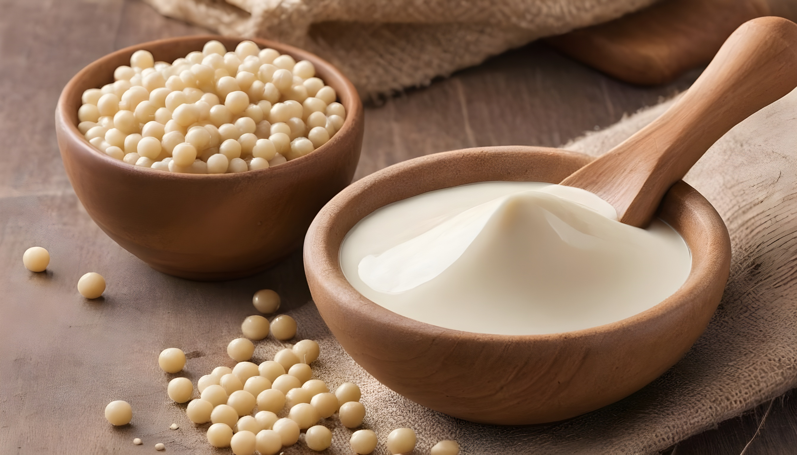
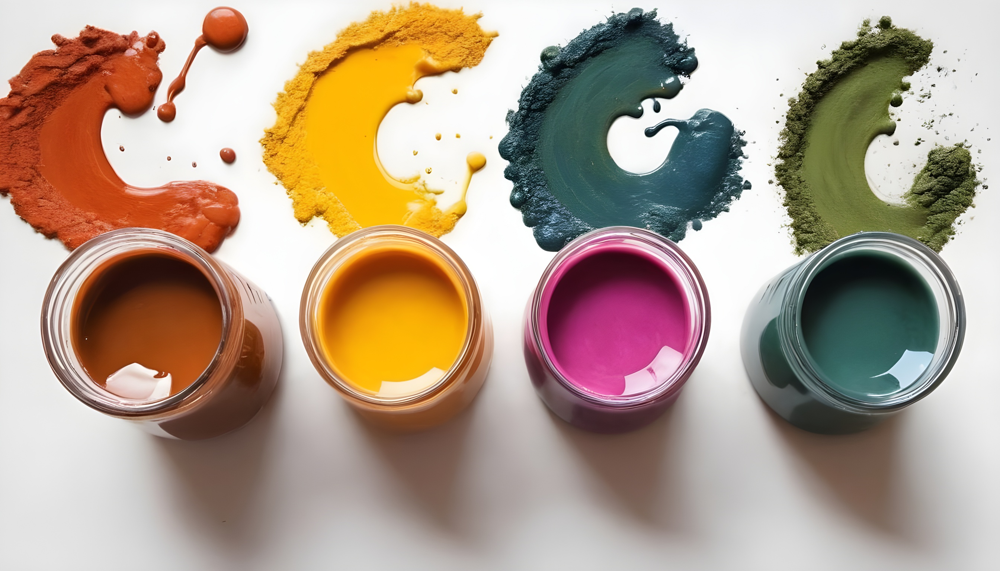
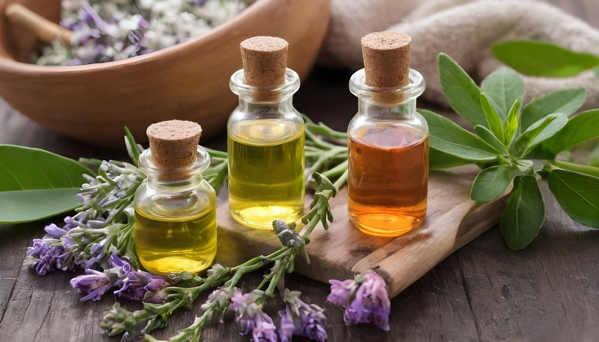
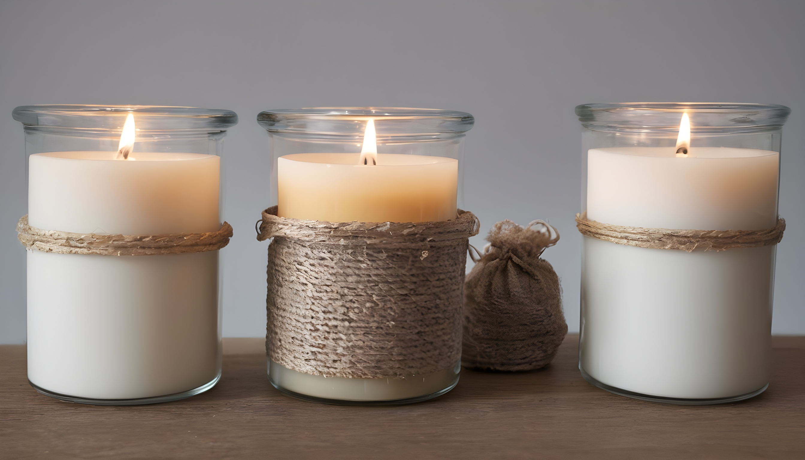

VELAS
Nos enorgullece ofrecer velas aromáticas de alta calidad que mantienen su fragancia de principio a fin. Utilizamos ingredientes de primera calidad y técnicas de fabricación cuidadosas para garantizar que cada vela que sale de nuestro local sea de la mejor calidad. Además, nuestras velas tienen una larga duración, lo que te permite disfrutar de su aroma durante muchas horas.
Nuetros productos son de prier calidad y te mostraremos cuales son nuestros ingredientes para fabricar tus velas favoritas
|  |  |  |  |
|---|---|---|---|
Cera de soya: La cera de soya es una alternativa natural y sostenible a la cera de parafina. Es biodegradable y produce menos hollín, lo que la hace más respetuosa con el medio ambiente. |
Colorantes naturales: Los colorantes naturales se utilizan para agregar color a las velas. Pueden ser en forma de polvo, líquido o incluso en forma de pigmentos naturales como la cúrcuma o la remolacha. |
Esencias aromáticas: Las esencias aromáticas son aceites concentrados que se utilizan para dar aroma a las velas. Existen una amplia variedad de esencias disponibles, desde aromas florales y frutales hasta aromas más cálidos y especiados. |
Envases: Los envases son importantes para contener la cera derretida y la mecha de la vela. Pueden ser recipientes de vidrio, latas metálicas, moldes de silicona u otros materiales seguros para velas. |